Learning Goals
- Use TailwindCSS to create a text-only hero block with the semantic <header> tag.
- Set the minimum height and internal spacing of a hero block.
- Use Flexbox utilities to position hero text vertically.
- Style large responsive headings with TailwindCSS.
- Add a colour gradient to the background of a hero block.
- Add simple entrance animations to hero text.
About hero blocks
Research has shown that a typical web user will form an opinion about a web page in just 50 milliseconds after the page loads on their screen.
- If users like what they see, they will continue to read the page – and maybe purchase a product or service.
- If they don't like what they see, they will exit the web page and go to another. And your website will have lost a potential customer.
So-called hero blocks (sometimes known as jumbotrons) are large and typically rectangular areas at the very top of a web page. They are the first item seen by users, and are intended to capture their attention and engage their interest in the web page.
Because they fill most of the top of the user's screen, hero blocks are often referred to as displaying above the fold. This term comes from the era when newspapers were printed on large sheets of paper. And, when placed in shops, they were folded in half so that only the top half of the paper was visible to customers. For this reason, newspapers printed their most attention-grabbing headlines and images above the fold.
On mobile, tablet, laptop and desktop screens, above the fold content is what the users can see without needing to scroll down the web page.
In the next two Tutorials, you will learn how to create hero blocks with background images and background videos. However, not every hero block needs to use images or videos. See the examples below.
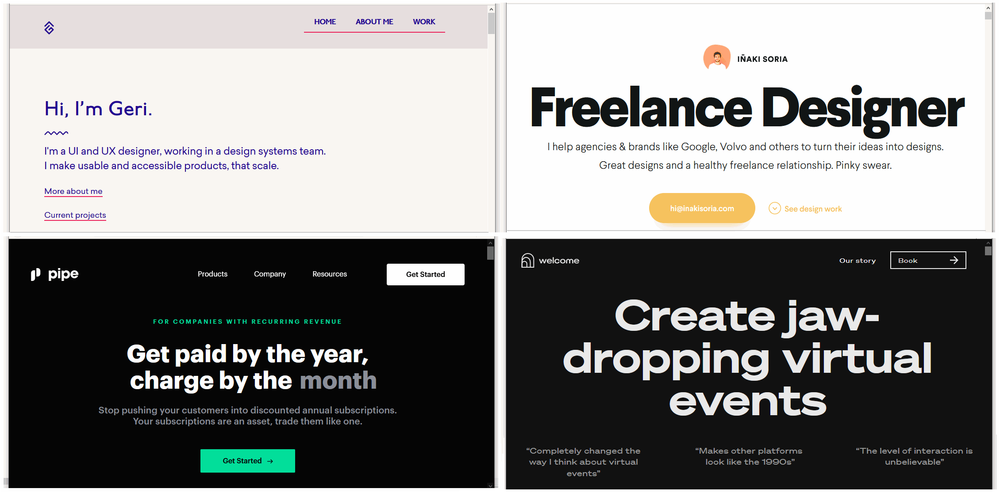
In this Tutorial, you will create a text-only hero block with:
- a large <h1> main heading;
- an <h2> sub-heading;
- a coloured background gradient;
- responsive spacing and typography; and
- simple text animations.
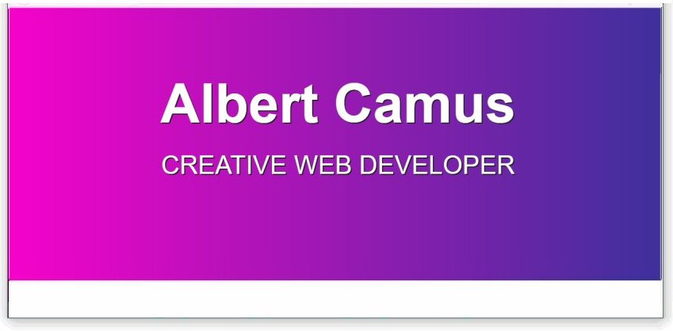
Downloading your sample file
In this Tutorial, you will work with a single web page:
- hero-text.html: Click this link to open the web page in a new tab of your web browser.
Right-click anywhere in the web page and choose Save as... (Brave or Chrome) or Save Page As... (Firefox) from the context menu displayed.
Save the web page in your websites/exercises folder with the name hero-text.html
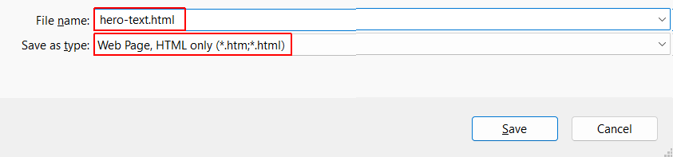
You can see that the web page contains a <header>.
And this contains a <h1> main heading and an <h2> sub-heading
Setting the mimimum height of the hero block
A hero block typically fills a large part of the browser viewport.
You can use the CSS vh unit to set a height relative to the viewport.
For example:
header { @apply min-h-[70vh]; }The value 70vh means that the hero block has a minimum height equal to 70% of the viewport height.
You can also use different values at different viewport widths.
header {
@apply min-h-[60vh] md:min-h-[80vh]
bg-gray-600;
}Add the above responsive minimum heights inside the <style> tag in the <head> to your web page.
In this example:
- min-h-[60vh] sets a minimum height of 60% of the viewport on small screens.
- md:min-h-[80vh] increases the minimum height to 80% of the viewport at 768px and above.
In your web browser, view your hero-text.html web page.
Centering the hero text vertically
TailwindCSS provides css flexbox utilities for positioning elements inside a container.
For this hero block, add the following utilities:
header {
@apply min-h-[60vh] md:min-h-[80vh]
bg-gray-600
flex flex-col justify-center;
}As you can see below, the hero text is centered vertically within the hero block.
Add horizontal spacing around the hero text
Let's add some horizontal spacing around the hero text.
header {
@apply min-h-[60vh] md:min-h-[80vh]
bg-gray-600
flex flex-col justify-center;
px-8 lg:px-60 py-12;
}Here:
- px-12 adds horizontal padding on small and medium-sized viewports.
- lg:px-60 increases the horizontal padding on viewports 1024px wide and above.
- py-12 adds padding above and below the hero content.
Here is how the hero block looks with the added horizontal spacing:
Alignment of <h1> and <h2> headings
Text within a hero block is most commonly centre-aligned. You achieve this by adding a text-center style rule to the header container.
header {
@apply min-h-[60vh] md:min-h-[80vh]
bg-gray-600
flex flex-col justify-center
px-8 lg:px-60 py-12
text-center;
}The text-center utility is inherited by the <h1> and <h2> elements inside the header.
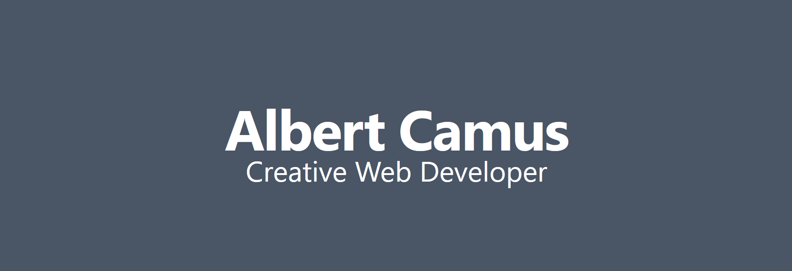
If you prefer a left-aligned hero block, simply remove text-center.
Below are some examples of hero blocks with centre and left-aligned text.
Vertical spacing between <h1> and <h2> headings
The <h1> and <h2> need some vertical space between them.
You can create this space by adding a bottom margin to the <h1>.
header h1 {
@apply text-7xl md:text-8xl
text-white font-bold
tracking-tight
mb-6;
}The mb-6 utility adds margin below the main heading and pushes the <h2> farther down.
This ‘pushes down’ the h2 sub-heading from under the h1 main heading.
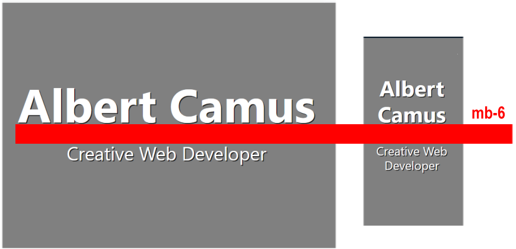
Updating the hero background with a linear gradient
Instead of using a single background colour, you can create a gradient between two colours.
For example:
header {
@apply min-h-[60vh] md:min-h-[80vh]
bg-linear-to-b from-purple-600 to-purple-900
flex flex-col justify-center
px-8 lg:px-60 py-12
text-center;
}Animation in web pages
You can add an on-load animation to a web page using only HTML and CSS. No JavaScript is required.
In practice, animating an element in a web page means changing one or more of the style rules (CSS properties) that control how it is displayed. Here are some CSS rules you can animate:
- color and background-color
- width and height
- transform, scale and zoom
To use CSS animation, you must specify a @keyframes that contains the ‘before’ and ‘after’ styles. More complex animations may have a whole series of intermediate style changes.
A simple keyframe looks like the following:
@keyframes bg-change { 0% { background-color: red } 100% { background-color: yellow } }
Now here is the HTML element you want to animate.
<!-- The element to be animated --> <div class="change-background-color">Change Me</div>
And here are its current CSS property in its linked stylesheet.
/* Element class */ .change-background-color { background-color: red; }
In the stylesheet, add the following two new style rules to the class.
/* Element class */ .change-background-color { background-color: red; animation-name: bg-change; animation-duration: 4s }
- animation-name: This connects the element to its @keyframe. You are free to choose this. For example, you could have named your animation change-bg, new-background or whatever.
- animation-duration: This is needed for the animation to work. The default value is 0s. In this simple example, the time chosen is 4s.
Other style rules you could add to the .change-background-color class include animation-delay (in seconds) and animation-iteration-count (the number of times the animation should run).
The animation speed curve
The so-called speed curve of an animation is controlled by its animation-timing-function CSS property. The possible values are:
- ease: Start slow, speed up, and then end slowly. (This is default.)
- linear: Same speed from start to finish
- ease-in: Start slow and speed up.
- ease-out: Start fast and end slowly.
- cubic-bezier(n,n,n,n): Uses mathematical equation with your entered values.
Animation values may be combined and written in CSS shorthand, beginning with the property name animation. For example:
/* Element class */ .change-background-color { background-color: red; animation: bg-change 4s ease-in }
Animating elements in CSS often requires complex, easy-to-mistype code. For this reason, frontend developers rely on visual code generators such as the following:
Animating your hero block
In this task, you will animate the <h1> heading and <h2> sub-heading in your sample hero-text web page using the Animista.net visual code generator.
Follow these steps to create a slide-in-top class and @keyframe.
- Go to this web page. Animista and click the Try me button.
- Across the top of the screen you can see a navigation menu bar of main options (BASIC, ENTRANCES, EXITS, TEXT ...).
For each of these main options, you can choose from a range of sub-options displayed as white text inside black circles on a draggable sub-menu.
Many of these sub-options also have sub-options of their own.
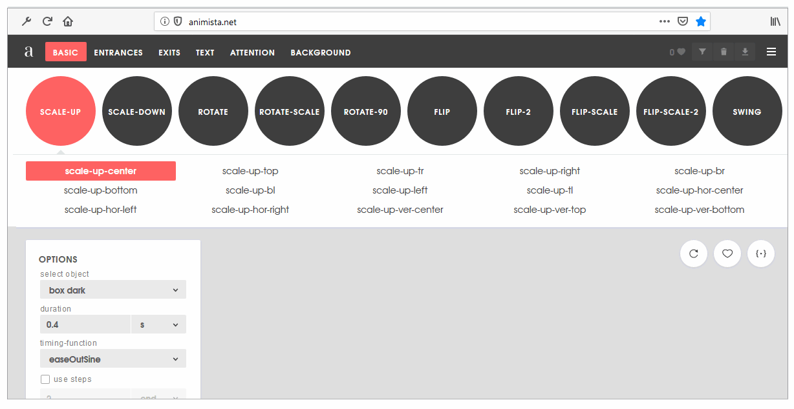
- In the main top menu, click the ENTRANCES option. Next, click the red circle containing the SLIDE-IN sub-option. Finally, click sub-sub-option named slide-in-top.
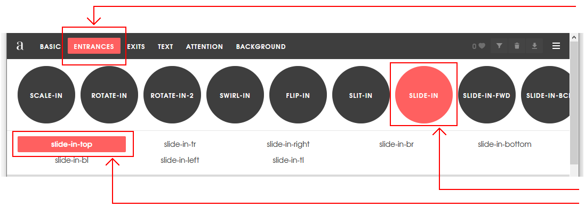
- At the right of the screen, click the {*} icon to display the CSS code that Animista has created for you.
- Deselect the Autoprefixer option and click the Copy Class button.
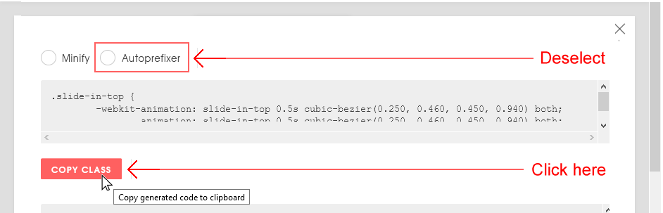
- Paste the code inside the <style> tag in the <head> of your hero-text.html file.
.slide-in-top { animation: slide-in-top 0.5s cubic-bezier(0.250, 0.460, 0.450, 0.940) both; }
- Return to the Animista screen, and click the Copy Keyframes button.
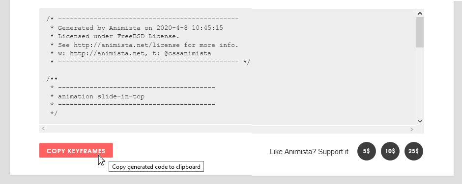
- Paste the code inside the <style> tag in the <head> of your hero-text.html file.
/* ---------------------------------------------- * Generated by Animista on 2020-4-8 10:45:15 * Licensed under FreeBSD License. * See http://animista.net/license for more info. * w: http://animista.net, t: @cssanimista * ---------------------------------------------- */ /* * ---------------------------------------- * animation slide-in-top * ---------------------------------------- */ @keyframes slide-in-top { 0% { transform: translateY(-1000px); opacity: 0; } 100% { transform: translateY(0); opacity: 1; } }
You have now finished creating the slide-in-top class. - When you apply this class to a heading or element in a web page, you may find that the animated element moves down a little too quickly.
In the styles for your web page, increase the time taken for the sliding animation from 0.5s to 1s as shown below.
.slide-in-top { animation: slide-in-top 1s cubic-bezier(0.250, 0.460, 0.450, 0.940) both; }
Next, follow these steps to create a slide-in-left class and @keyframe.
- Return to the main Animista web page.
- In the menu across the top of the web page, click the ENTRANCES option.
- Next, click the red circle containing the SLIDE-IN sub-option.
- Finally, click sub-sub-option named slide-in-left.
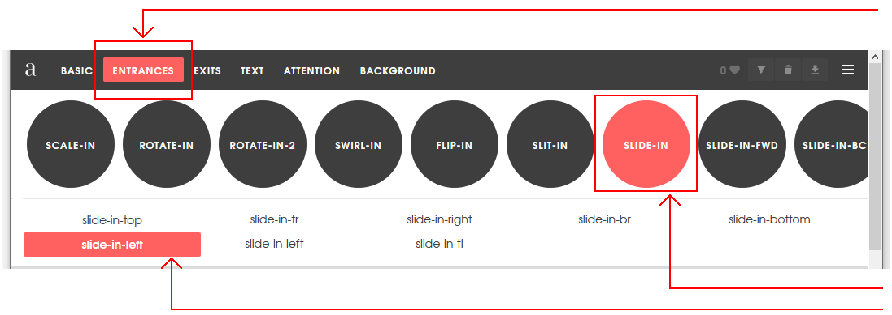
- At the right of the screen, click the {*} icon to display the CSS code that Animista has created for you.
- Deselect the Autoprefixer option and click the Copy Class button.
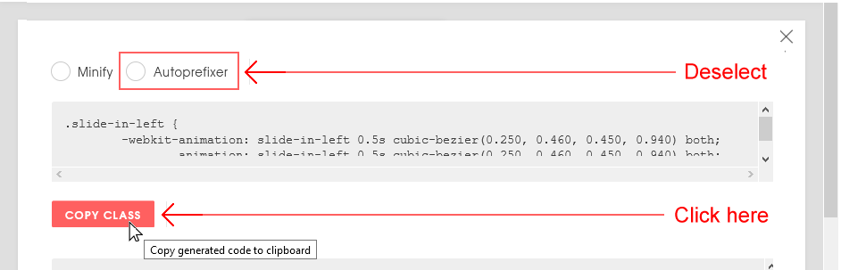
- Paste the code inside the <style> tag in the <head> of your hero-text.html file.
.slide-in-left { animation: slide-in-left 0.5s cubic-bezier(0.250, 0.460, 0.450, 0.940) both; }
- Return to the Animista screen, and click the Copy Keyframes button.
- Paste the code inside the <style> tag in the <head> of your hero-text.html file.
/* ---------------------------------------------- * Generated by Animista on 2020-4-8 10:45:15 * Licensed under FreeBSD License. * See http://animista.net/license for more info. * w: http://animista.net, t: @cssanimista * ---------------------------------------------- */ /* * ---------------------------------------- * animation slide-in-left * ---------------------------------------- */ @keyframes slide-in-left { 0% { transform: translateX(-1000px); opacity: 0; } 100% { transform: translateX(0); opacity: 1; } }
You have now finished creating the slide-in-left class.
Applying the animated text classes
You will now apply the two new animated text classes in your stylesheet to your web page.
- In your hero-text.html file, add the slide-in-top class to your <h1> heading as shown below.
- Add the slide-in-left class to your <h2> sub-heading as shown below.
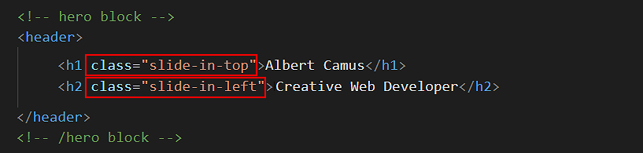
All done.
Updating your website home page
Now that you have updated and styled a new web page, let’s add a hyperlink to it on the ‘home page’ of your website. Follow the steps below:
- In VS Code, open this HTML file in your ‘main’ websites folder: index.html
- Copy-and-paste the following new line to your web page at end of current list of web pages.
<p><a href="exercises/hero-text.html">Hero block with animated text</a></p>
Save your index.html web page and view the result in your browser.
✅ That’s it. You have now successfully completed this Tutorial.
Uploading your files to Github
You are now ready to upload your work to your account on GitHub.
- Open a new tab in your web browser and go to Github.com. If you are not already signed in to your GitHub account, sign in now.

- On your GitHub home page, click the ‘repo’ that holds your web pages. Its name will look as follows, where username is your chosen username on GitHub.
username.github.io

- On the next GitHub screen displayed, near the right of the screen, you can see a button named Add file. Click on it.
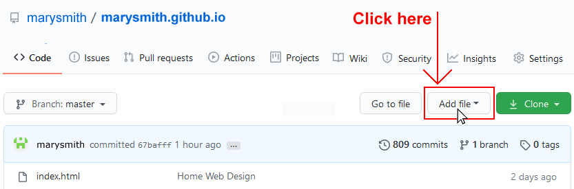
- From the dropdown list displayed, choose the option Upload files.

- In File Explorer (Windows) or Finder (Apple Mac), drag-and-drop your index.html file and your 📁 exercises sub-folder to upload them to your repository on Github.
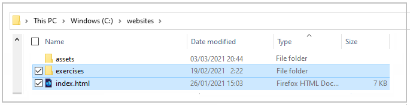
- Scroll down to the bottom of the GitHub screen, and accept or edit the short message (Add files via upload) in the Commit changes box.
- Finally, click the green Commit changes button to upload your files.
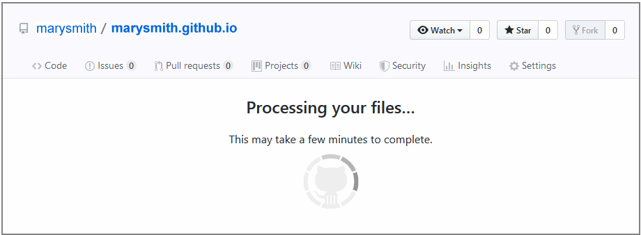
Your updated home page and sample web page are now published on Github at web addresses similar to the following:
https://username.github.io/index.html
https://username.github.io/exercises/hero-text.html
It may take a few minutes for your uploaded files to appear on GitHub.